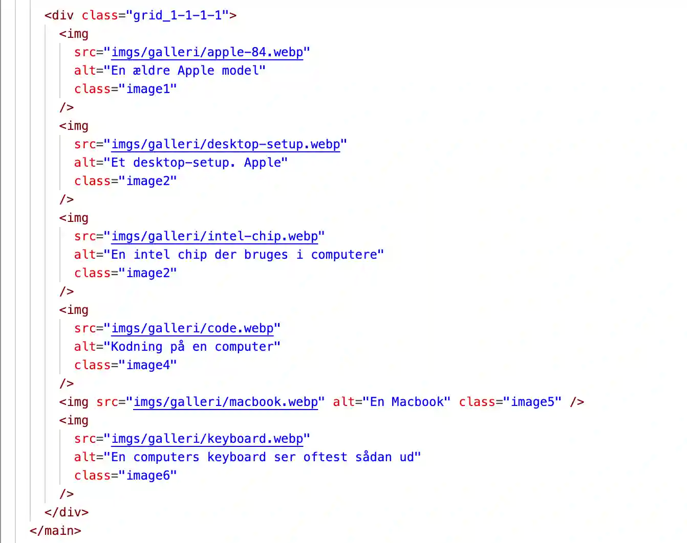

Grundlæggende web
Tema 2 - Website
I mit første forløb fik jeg en introduktion til de vigtigste værktøjer, der danner fundamentet for resten af min uddannelse. Jeg lærte om nøglebegreber inden for digitalt design, indholdsproduktion, responsivt webdesign og digital kommunikation. Samtidig fik jeg hands-on erfaring med at opbygge websider i HTML og CSS samt arbejde med grafisk design og layout i bl.a. Figma.
Læring og proces
I dette tema lærte jeg de grundlæggende redskaber og teknikker til at skabe et velfungerende website. Jeg arbejdede med gestaltlovene, typografi og brugen af wireframes og layoutdiagrammer til at planlægge et site's struktur. Derudover analyserede og klassificerede vi websites baseret på designstile. Alt dette omsatte jeg til praksis i mit første projekt baseret på udleveret indhold, wireframes og layoutdiagrammer.
Proces
I dette forløb skulle vi udvikle et website baseret på udleveret materiale. Fokus lå ikke på research, men på at få styr på de værktøjer og teknikker, vi skulle bruge fremadrettet. Jeg brugte tid på at forstå layoutdiagrammer og arbejdet med at kode efter princippet "mobile first". Derefter indsatte jeg det udleverede indhold i min HTML og finjusterede sitet i CSS. Jeg anvendte grid til opsætningen og brugte CSS til at style og tilpasse sitets design.
layoutdiagrammer
Eksempel
HTML
Her ses et eksempel på, hvordan jeg indsatte layoutdiagrammet i min HTML for mit galleri. Jeg indsatte nogle div'er, som jeg gav class'erne, som stod på det udleverede layoutdiagram.
CSS
Her kan man se, hvordan jeg opsatte galleriets layout i CSS ved hjælp af display: grid. Med grid-systemet kunne jeg nemt definere placeringen af de enkelte elementer og skabe en struktureret og fleksibel opsætning.